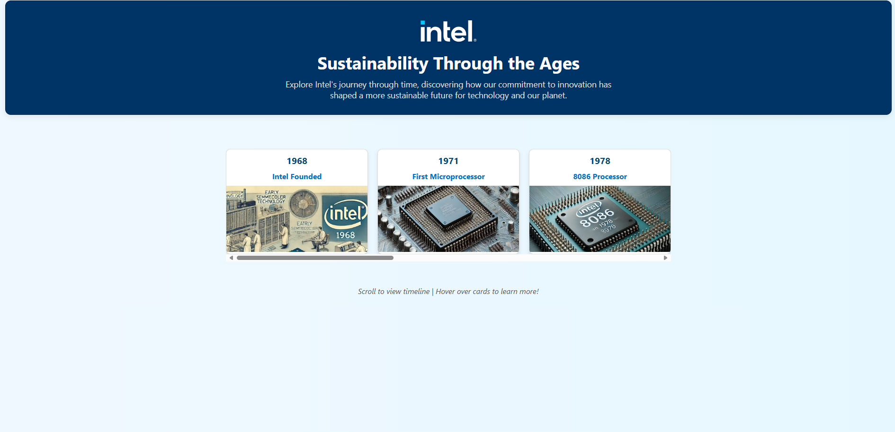
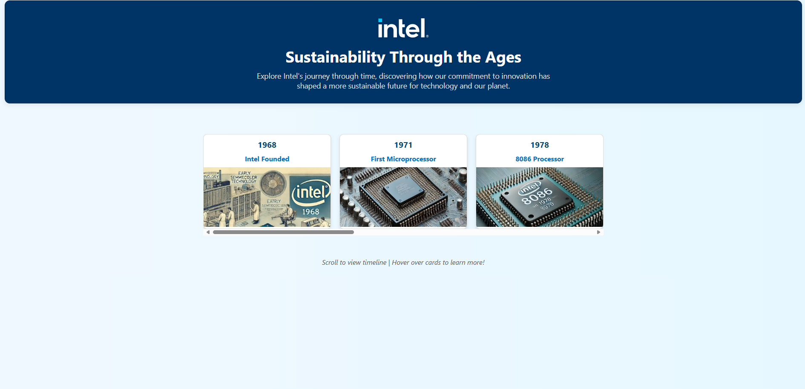

Intel Sustainability Timeline
A modern, responsive site for Intel, highlighting the company's sustainability initiatives and environmental impact. Features clean design and accessible layout.
Hello! I'm Katie, a Computer Science student at Appalachian State University with a strong interest in technology and programming. I enjoy building websites and games using languages such as Java, Python, C, HTML, CSS, and Assembly.
I participated in the 2024 Game Jam as a programmer and am currently part of the Global Career Accelerator's Web Development program. These experiences have strengthened my communication skills and technical abilities.
Outside of coding, I enjoy ice skating, reading, and writing. I'm known for being hardworking and disciplined, and I’m actively seeking internship or entry-level opportunities in the tech industry.
 Java & JavaScript (basic)
Java & JavaScript (basic) Python
Python GitHub
GitHub Assembly Language
Assembly Language Communication
Communication Creativity Writing
Creativity WritingA modern, responsive site for Intel, highlighting the company's sustainability initiatives and environmental impact. Features clean design and accessible layout.
An interactive timeline webpage for Intel, showcasing key sustainability milestones using Flexbox and modern web techniques.
A fun, educational browser game that promotes water conservation. Built with HTML, CSS, and JavaScript, featuring interactive gameplay and engaging visuals.
Explore NASA's Astronomy Picture of the Day and Mars Rover photos. This web app uses NASA's public APIs and offers a sleek, user-friendly interface.
An interactive chatbot for L'Oréal, designed to answer user questions and provide product information. Built with modern web technologies and a focus on UX.
A web app for building personalized skincare routines for L'Oréal users. Features interactive product selection, recommendations, and a clean, accessible design.
Connect with me on LinkedIn.